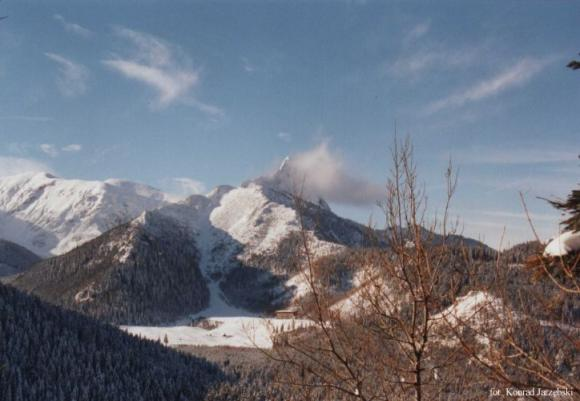
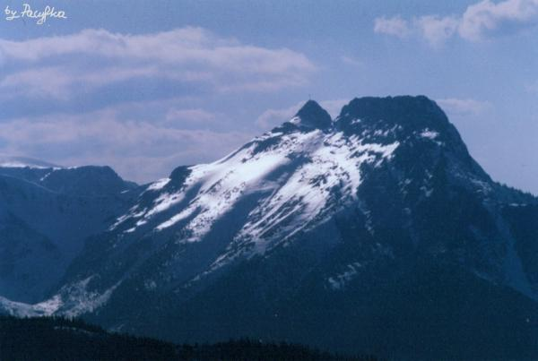

|
...Giewont zarzucił śnieżny welon na ramiona...
fot. Konrad Jarzębski |
 |
Tatry w zimie Księżycowego światła magnezjowe fale
Gdyby welon pajęczy tatrzańskiej Goplany
Świat lodowy lśni, gdyby baśń kuta w krysztale,
Kilofami dźwięcznymi... Świat szronem dzierzgany,
|
| "Giewont lodowaty, gdyby olbrzym szklany..." fot. Pacyfka |
 |